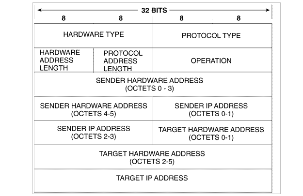
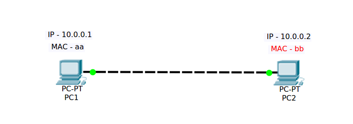
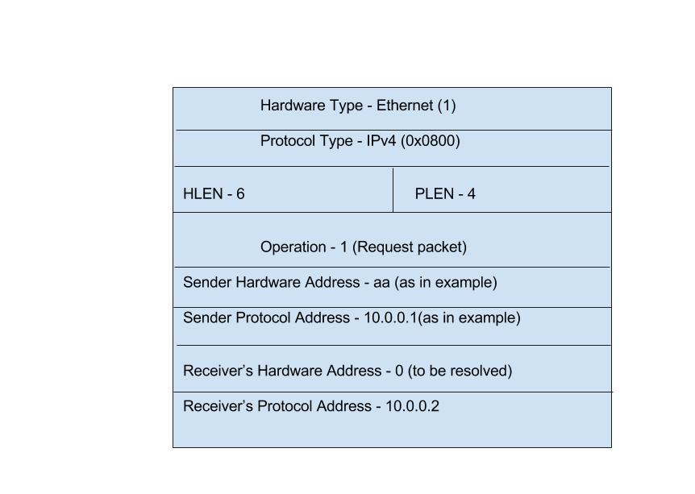

Address Resolution Protocol (ARP)
Table of Contents
1 Introduction
ARP is a protocol which is used for resolving MAC address of a machine whose IP address is known.
1.1 Used for
Resolving MAC address when IP address is known. An Ethernet frame cannot be sent to a specific machine if its MAC address is not known.
1.2 Used by
Networking devices, like end hosts, routers etc
1.3 How does a networking device knows that ARP is to be resolved ?
Every device maintains an ARP table or ARP cache. Whenever it needs
MAC address binded to sepecific IP address, it first refers its ARP
table and if an entry is not found in that table, ARP is
resolved.
For example -
#ARP Command on linux machine aashay@aashay ~/ashay/docs/arp $ arp -a ? (10.2.56.1) at 00:1d:45:55:2e:3f [ether] on eth0 ? (10.2.58.136) at 74:27:ea:a4:12:8b [ether] on eth0 #ARP Command on cisco router Router_sales#show arp Protocol Address Age (min) Hardware Addr Type Interface Internet 10.0.0.1 - c401.0f00.0000 ARPA FastEthernet0/0
2 Type of ARP packet
2.1 ARP request packet
ARP request packet is sent by the device to request for the MAC
address of device, whose IP address is known.
ARP request packet is always a broadcast.
2.2 ARP response packet
ARP response packet is sent by the device, whose MAC address is
demanded in ARP request packet.
ARP response packet is always a unicast.
3 ARP Packet format

ARP packet format
Following are the important fields in an ARP packet -
Hardware Type
This field specifies the type of harware used for transmitting ARP message. For most of the time it is Ethernet with value 0x00001.Protocol Type
This field specifies the type of layer 3 addresses used in the message. IPv4 is the most common and is having value 0x0800.Hardware Address Length
This specifies how long hardware addresses are in the message. It is having value 6.Protocol Address Length
This specfies the length of layer 3 addresses in the message. It is having value 4.OP code
This field is important as it mentions the type of ARP message. Out of 9 possible values important ones are 1 for ARP request packet and 2 for ARP response packet.Sender Hardware Address
The hardware address(MAC) if the device sending ARP message.Sender Protocol Address
The IP address of the device sending this message.Target Hardware Address
The hardware address(MAC) of device to whom this message is being sent to.Target Protocol Address
The IP address of the device this message is being sent to.
4 ARP resolution Process
Complete process of obtaining MAC address of device can be represented in a sequence of steps.
Let us take a sample topology as given below -

sample topology
In the image given above, we have two computers connected to each other.
COMPUTER NAME - PC1 MAC ADDRESS - aa (assumed) IP ADDRESS - 10.0.0.1 /8 ARP Table - Empty or cleared COMPUTER NAME - PC2 MAC ADDRESS - bb (assumed) IP ADDRESS - 10.0.0.2 /8 ARP Table - Empty or cleared
Let us see what happens, if PC1 wants to send some data to PC2(say ICMP echo request packet).
- You open the command prompt in PC1 and type "ping 10.0.0.2" and press Enter.
- PC1 will check whether the destination IP is in the same network or not.
- It will now check for the entry of 10.0.0.2 MAC address in ARP table.
- The entry of 10.0.0.2 in ARP table is not found.
- PC1 will start forming an ARP request packet.
- Considering some important fields of ARP packet, the ARP packet
formed by PC1 will look like the one given below -

ARp request packet
- Now this ARP packet is to be encapsulated in ethernet frame.
- As we know that an ARP request packet is always broadcasted, the
value for Destination MAC is a broadcast mac (ff:ff:ff:ff:ff:ff).
The Ethernet Frame formed will look like the one given below -
| ff:ff:ff:ff:ff:ff | aa | 0x0806 | ARP request packet encapsulated | checksum |
- PC2 will receive the Ethernet frame. It will accept it and will decapsulate the ARP Packet from it.
- It will now check the Ethernet Type value in frame, which is
0x0806. Hence it will come to know that frame contains ARP packet encapsulated in it.
- PC2 then will encapsulate the frame and will check (if My IP == Receiver's Protocol Address). Which is true here.
- It will then learn the MAC of PC1 by adding entry in MAc address table.
- It will then check what type of ARP message is this. Since it is Request packet, it will form a response packet.
- An ARP response packet formed by PC2 will have following values -
- Hardware Type - Ethernet (1)
- Protocol Type - IPV4 (0x0800)
- HLEN - 6
- PLEN - 4
- Operation - Response(2)
- Sender's Hardware Address - bb( as PC2 is sending this)
- Sender's Protocol Address - 10.0.0.2 (as PC2 is sending this)
- Receiver's Hardware Address - aa (as PC2 knows who is requesting for MAC)
- Receiver's Protocol Address - 10.0.0.1 (as Pc2 knows who is requesting for MAC)
- This ARP respons message will also be carried in ethernet frame.
- PC2 will form an ethernet frame with following value -
- DMAC - aa(PC1)
- SMAC - bb(PC2)
- Ethernet type - 0x0806
- Data - Encapsulated ARP response message
- Some checksum value
- PC1 will receive this frame and hence ARP process completes.